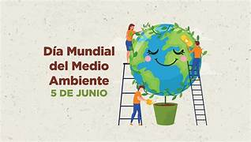

Medio Ambiente
El Día Mundial del Medio Ambiente se celebra el 5 de junio de cada año y fue establecido por la Asamblea General de las Naciones Unidas en 1972. Esta decisión se tomó durante la Conferencia de las Naciones Unidas sobre el Medio Humano, que se llevó a cabo en Estocolmo, Suecia, del 5 al 16 de junio de 1972. En esta conferencia se adoptó la Resolución 2994 (XXVII), que designa el 5 de junio como el Día Mundial del Medio Ambiente, coincidiendo con la fecha de apertura de la conferencia. El propósito de dedicar un día al medio ambiente es aumentar la conciencia global sobre la importancia de proteger y mejorar el medio ambiente. Este día sirve como una plataforma para:
1. Generar conciencia: Aumentar la comprensión y la conciencia sobre los problemas ambientales.
2. Promover la acción: Fomentar la acción ambiental positiva a nivel global, nacional y local.
3. Facilitar la colaboración: Proporcionar una oportunidad para que gobiernos, organizaciones no gubernamentales, empresas y ciudadanos colaboren en iniciativas ambientales.
4. Inspirar cambio: Inspirar a las personas a convertirse en agentes activos del desarrollo sostenible.
Cada año, el Día Mundial del Medio Ambiente tiene un tema específico que se centra en un área de preocupación ambiental, como la contaminación plástica, el cambio climático, la biodiversidad, entre otros. Este enfoque temático permite que la campaña sea más efectiva al atraer la atención y movilizar recursos y acciones hacia problemas específicos.
El Día Mundial del Medio Ambiente se ha convertido en una de las mayores plataformas globales para la divulgación ambiental y la participación pública, involucrando a millones de personas en más de 150 países.
Celebraciones
La celebración del Día Mundial del Medio Ambiente tiene como objetivo principal sensibilizar y movilizar a las personas y organizaciones para que tomen acciones positivas en favor del medio ambiente. A continuación, se detallan los objetivos, funciones, organización e integrantes de esta celebración:
Objetivos
1. Concienciación Ambiental: Incrementar la comprensión global sobre la importancia de la conservación y protección del medio ambiente.
2. Promoción de Políticas Sostenibles: Fomentar la adopción de políticas y prácticas sostenibles a nivel local, nacional e internacional.
3. Educación Ambiental: Informar y educar a la población sobre los problemas ambientales y las soluciones disponibles.
4. Participación Ciudadana: Motivar a las personas a participar activamente en actividades que beneficien al medio ambiente.
5. Colaboración Internacional: Facilitar la cooperación entre países para abordar problemas ambientales globales.
Funciones
1. Divulgación: Utilizar medios de comunicación y plataformas digitales para difundir mensajes y campañas sobre temas ambientales específicos.
2. Organización de Eventos: Realizar actividades como seminarios, talleres, concursos, campañas de limpieza, plantación de árboles, etc.
3. Formación y Capacitación: Ofrecer programas educativos y de capacitación para aumentar el conocimiento y las habilidades en temas ambientales.
4. Implementación de Proyectos: Iniciar y apoyar proyectos que promuevan la sostenibilidad y la conservación ambiental.
5. Evaluación y Monitoreo: Medir el impacto de las actividades y ajustar estrategias para mejorar la efectividad de las acciones ambientales.
Organización
El Día Mundial del Medio Ambiente es coordinado principalmente por el Programa de las Naciones Unidas para el Medio Ambiente (PNUMA). Sin embargo, la organización y celebración de eventos involucra a una amplia gama de actores, incluyendo:
1. Gobiernos Nacionales y Locales: Implementan políticas y organizan eventos nacionales y regionales.
2. Organizaciones No Gubernamentales (ONGs): Desarrollan programas y actividades para concienciar y educar a la población.
3. Instituciones Educativas: Promueven la educación ambiental a través de programas escolares y universitarios.
4. Sector Privado: Empresas que apoyan y patrocinan iniciativas ambientales y adoptan prácticas sostenibles.
5. Medios de Comunicación: Difunden información y campañas de sensibilización a una audiencia más amplia.
6. Comunidades y Ciudadanos: Participan activamente en actividades locales y promueven prácticas sostenibles en su vida diaria.
Integrantes
1. Líderes y Activistas Ambientales: Personas influyentes que promueven la causa ambiental.
2. Educadores y Estudiantes: Involucrados en programas educativos y actividades de sensibilización.
3. Voluntarios: Ciudadanos que participan en actividades de limpieza, reforestación y otras iniciativas.
4. Expertos y Científicos: Proporcionan conocimientos y soluciones basadas en la ciencia para abordar problemas ambientales.
5. Funcionarios Públicos: Implementan y supervisan políticas ambientales.
6. Empresas y Corporaciones: Adoptan y promueven prácticas de negocio sostenibles.
El Día Mundial del Medio Ambiente es una oportunidad para que todos los sectores de la sociedad trabajen juntos en la construcción de un futuro sostenible, donde el medio ambiente sea valorado y protegido para las generaciones presentes y futuras.
Cuestion Ambiental
El estado actual del planeta Tierra en términos ambientales es motivo de preocupación a nivel global. A continuación, se destacan algunas de las condiciones ambientales más críticas que enfrenta nuestro planeta:
Cambio Climático
1. Aumento de Temperaturas: La temperatura global ha aumentado aproximadamente 1.2 grados Celsius desde la era preindustrial debido a la quema de combustibles fósiles y otras actividades humanas.
2. Fenómenos Climáticos Extremos: Hay un incremento en la frecuencia e intensidad de eventos climáticos extremos como huracanes, olas de calor, sequías e inundaciones.
Pérdida de Biodiversidad
1. Extinción de Especies: Según informes de la ONU, alrededor de un millón de especies animales y vegetales están en riesgo de extinción.
2. Degradación de Hábitats: La deforestación, la urbanización y la agricultura intensiva están destruyendo los hábitats naturales a un ritmo alarmante.
Contaminación
1. Contaminación del Aire: La calidad del aire ha disminuido en muchas partes del mundo, especialmente en áreas urbanas, debido a las emisiones de vehículos, industrias y la quema de combustibles fósiles.
2. Contaminación del Agua: Ríos, lagos y océanos están contaminados por plásticos, productos químicos y desechos industriales, afectando la vida marina y la salud humana.
3. Contaminación del Suelo: El uso excesivo de pesticidas y fertilizantes, junto con la gestión inadecuada de desechos, ha contaminado muchos suelos agrícolas.
Deforestación
1. Pérdida de Bosques: Cada año se pierden millones de hectáreas de bosques debido a la tala ilegal, la agricultura y la expansión urbana. Los bosques tropicales, en particular, están en grave peligro.
2. Impacto en el Ciclo del Carbono: La deforestación contribuye al cambio climático al liberar grandes cantidades de dióxido de carbono almacenado en los árboles.
Degradación del Suelo
1. Desertificación: La degradación del suelo ha llevado a la desertificación de vastas áreas, especialmente en África y Asia, afectando la agricultura y los medios de vida.
2. Erosión del Suelo: La erosión del suelo debida a prácticas agrícolas no sostenibles y a la deforestación está reduciendo la fertilidad de la tierra.
El planeta Tierra enfrenta desafíos ambientales significativos que requieren una acción urgente y concertada a nivel global, regional y local para mitigar los efectos y promover un desarrollo sostenible.
Mejorar el Medio Ambiente
México está llevando a cabo diversas acciones para mejorar el medio ambiente y abordar problemas como el cambio climático, la contaminación, la deforestación y la pérdida de biodiversidad. A continuación, se describen algunas de las principales iniciativas y programas que el país está implementando: Políticas y Estrategias Nacionales
1. Ley General de Cambio Climático (LGCC): Esta ley establece las bases para la creación de políticas públicas orientadas a la mitigación y adaptación al cambio climático. Incluye metas específicas de reducción de emisiones de gases de efecto invernadero.
2. Programa Especial de Cambio Climático (PECC): Este programa se enmarca dentro de la LGCC y establece acciones y metas específicas para reducir las emisiones de gases de efecto invernadero y mejorar la resiliencia ante los impactos del cambio climático.
3. Estrategia Nacional de Biodiversidad: México ha desarrollado estrategias para la conservación y el uso sostenible de la biodiversidad, abordando la protección de ecosistemas y especies en peligro.
Energías Renovables y Eficiencia Energética
1. Fomento a las Energías Renovables: México ha incrementado su capacidad de generación de energía a partir de fuentes renovables como la eólica, solar y geotérmica. Programas como la subasta de energía limpia han atraído inversiones en este sector.
2. Eficiencia Energética: El gobierno ha implementado programas para mejorar la eficiencia energética en edificios, industrias y hogares, como el programa de sustitución de electrodomésticos por modelos más eficientes.
Conservación de Bosques y Reforestación
1. Programa Nacional Forestal (PRONAFOR): Este programa promueve la conservación, restauración y manejo sustentable de los bosques. Incluye iniciativas de reforestación y la promoción de prácticas forestales sostenibles.
2. Pago por Servicios Ambientales (PSA): Este programa incentiva a los propietarios de tierras forestales a conservar y restaurar sus bosques mediante pagos por los servicios ambientales que estos proporcionan, como la captura de carbono y la conservación de la biodiversidad.
Manejo de Residuos y Economía Circular
1. Ley General para la Prevención y Gestión Integral de los Residuos: Esta ley establece principios y estrategias para la gestión adecuada de los residuos sólidos, promoviendo el reciclaje, la reducción en la generación de residuos y la gestión integral de los mismos.
2. Programas de Reciclaje: En varias ciudades, se han implementado programas de separación de residuos y reciclaje, así como campañas de concienciación para reducir el uso de plásticos de un solo uso.
Calidad del Aire y Movilidad Sustentable
1. Proaire: Los Programas de Gestión para Mejorar la Calidad del Aire (Proaire) se implementan en las principales zonas metropolitanas del país para reducir la contaminación del aire. Estos programas incluyen medidas como la regulación de emisiones vehiculares e industriales.
2. Movilidad Sustentable: Ciudades como Ciudad de México han implementado sistemas de transporte público más eficientes y sostenibles, como el Metro y el Metrobús, así como programas de ciclismo urbano como Ecobici.
Estas acciones reflejan el compromiso de México con la protección del medio ambiente y la promoción de un desarrollo sostenible, aunque se reconoce que aún existen desafíos significativos que requieren una mayor implementación y reforzamiento de políticas y programas ambientales.